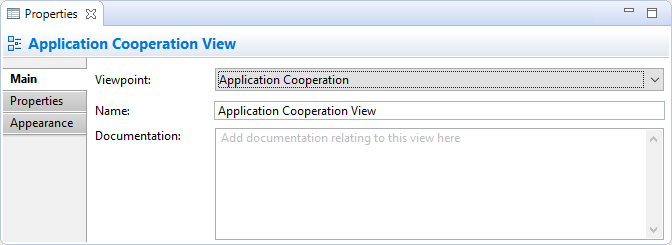
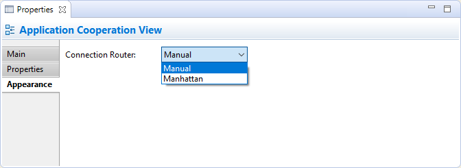

Choisir une vue dans l'arborescence des modèles ou dans une vue signifie que vous pouvez modifier les propriétés suivantes dans la fenêtre des propriétés.
L'onglet principal
Modifier les propriétés "Principalles" pour une vue
| Point de vye | Choisissez le point de vue pour la vue. Plus d'information sur Viewpoints |
| Nom: | Le nom de la vue |
| Documentation: | Un emplacement pour saisir de la documentation utilisateur en rapport avec la vue |
Dans le champ de saisie texte "Documentation", les URL qui commencent par "http://" "https://" ou "ftp://" seront affichées sous forme de lien hypertexte. Si vous appuyez sur la touche Ctrl / Commande, le curseur sera modifié prendra la forme d'une "main" et vous pouvez ouvrir le lien dans un navigateur.
L'onglet des propriétés
Pour plus d'informations concernant la création et la gestion des propriétés utilisateurs, voir Propriétés utilisateur.
L'onglet apparence
Modifier les propriétés d'apparence d'une vue
| Routeur de connexion: | Indique le type de routeur de connexion pour toute la vue. Les options sont: Manuel - Lignes droites Manhattan - Effectue les routes en utilisant un connecteur orthogonal. Pour plus d'informations, voir Configurer le type de routeur de connexion pour une vue |